Rolig core og bekkenbunn
Korte, rolige økter for magen og bekkenbunnen etter fødsel. Fire faser, lydguide og timer, fingertest og varseltegn – på norsk og uten internett.
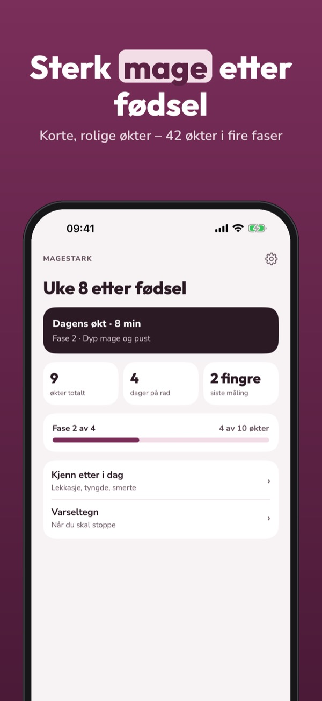
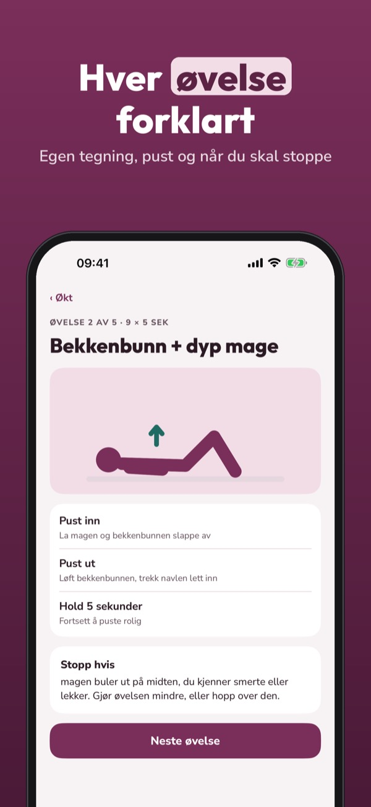
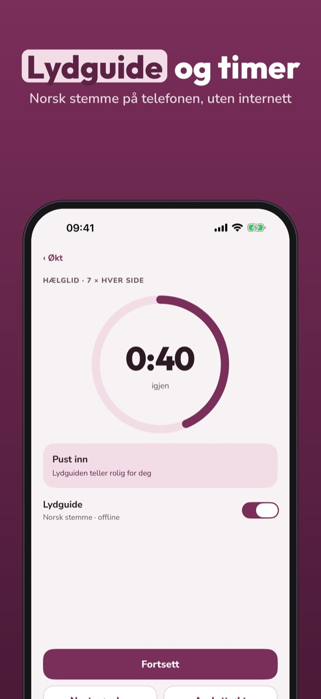
Magestark er et rolig treningsprogram for magen og bekkenbunnen etter fødsel, laget for travle dager med en liten baby.
Fase 1, fingertest, varseltegn og innsjekk kan brukes uten kjøp. Fullversjonen er et engangskjøp som låser opp alle faser, lydguide og fremgang. Ingen abonnement.
Magestark er et treningsprogram og erstatter ikke helsepersonell. Start etter klarsignal fra jordmor, lege eller fysioterapeut.
Terms of Use (EULA): https://www.apple.com/legal/internet-services/itunes/dev/stdeula/
Privacy: https://baytechbv.github.io/privacy/magestark-eu/
Rolig core og bækkenbund
Korte, rolige træningspas for maven og bækkenbunden efter fødslen. Fire faser, lydguide og timer, fingertest og advarselstegn – på dansk og uden internet.
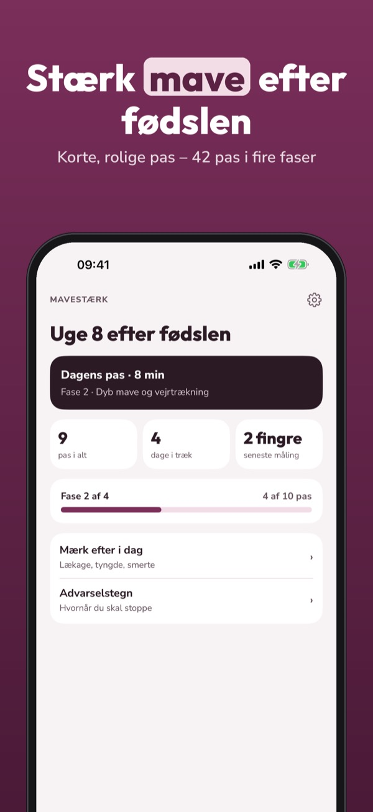
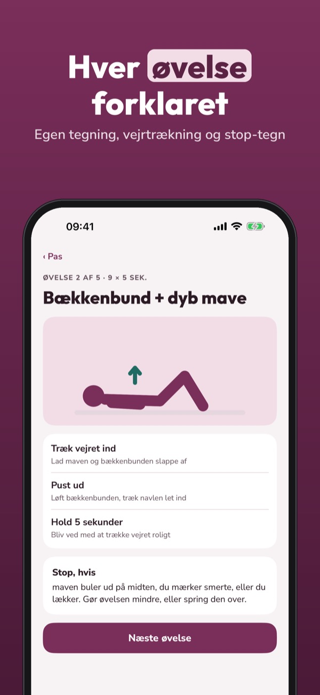
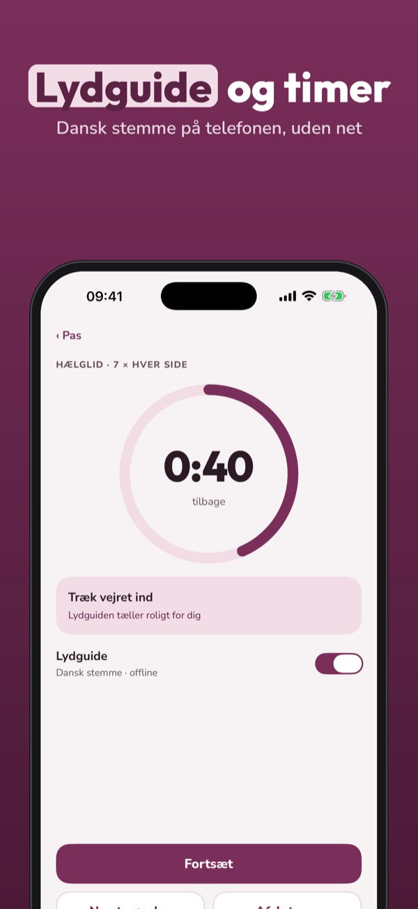
Mavestærk er et roligt træningsprogram for maven og bækkenbunden efter fødslen, lavet til travle dage med en lille baby.
Fase 1, fingertest, advarselstegn og dagligt tjek kan bruges uden køb. Fuld version er et engangskøb, der låser alle faser, lydguide og fremskridt op. Intet abonnement.
Mavestærk er et træningsprogram og erstatter ikke sundhedspersonale. Start efter grønt lys fra jordemoder, læge eller fysioterapeut.
Terms of Use (EULA): https://www.apple.com/legal/internet-services/itunes/dev/stdeula/
Privacy: https://baytechbv.github.io/privacy/magestark-eu/
Vatsa ja lantionpohja
Lyhyitä, rauhallisia harjoituksia vatsalle ja lantionpohjalle synnytyksen jälkeen. Neljä vaihetta, ääniopastus, sormitesti ja varoitusmerkit – ilman nettiä.
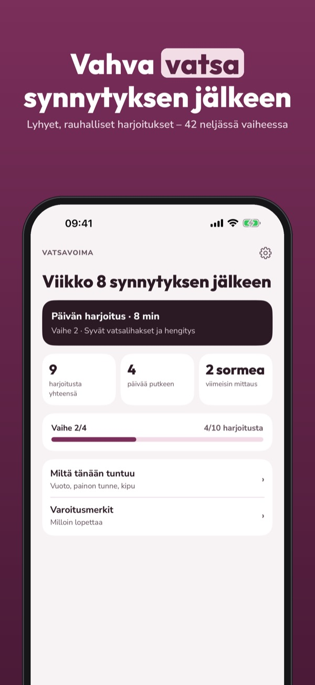
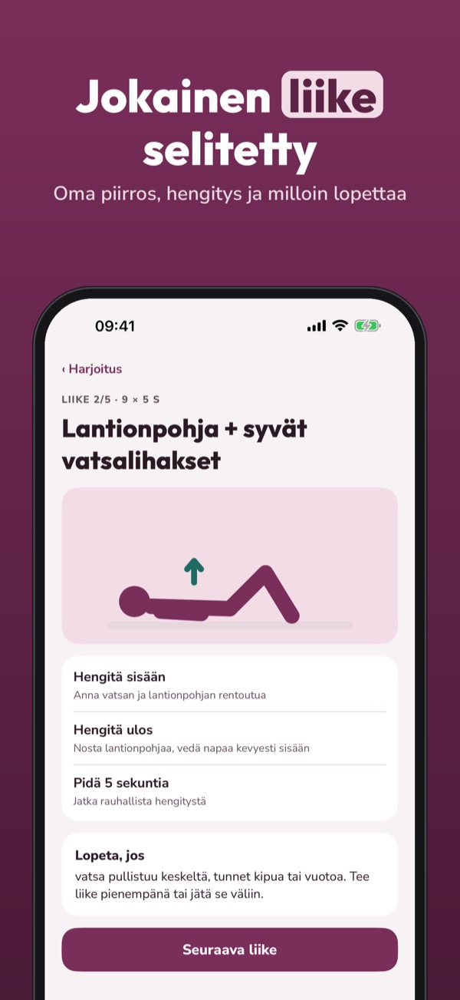
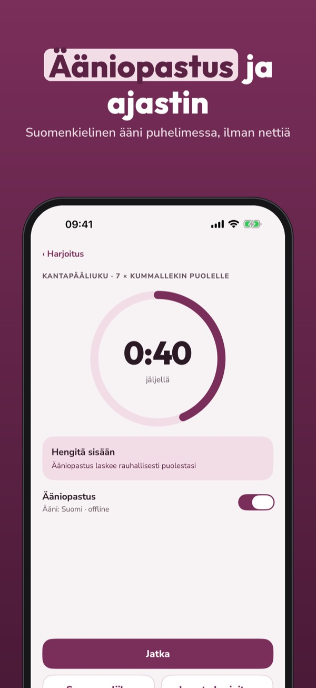
Vatsavoima on rauhallinen harjoitusohjelma vatsalle ja lantionpohjalle synnytyksen jälkeen, tehty kiireisiin vauvapäiviin.
Vaihe 1, sormitesti, varoitusmerkit ja päivän tarkistus ovat käytössä ilman ostoa. Täysi versio on kertaosto, joka avaa kaikki vaiheet, ääniopastuksen ja edistymisen. Ei tilausta.
Vatsavoima on harjoitusohjelma eikä korvaa terveydenhuoltoa. Aloita, kun kätilö, lääkäri tai fysioterapeutti on antanut luvan.
Terms of Use (EULA): https://www.apple.com/legal/internet-services/itunes/dev/stdeula/
Privacy: https://baytechbv.github.io/privacy/magestark-eu/
Buik en bekkenbodem, rustig
Korte, rustige trainingen voor buik en bekkenbodem na de bevalling. Vier fasen, audiocoach en timer, vingertest en waarschuwingssignalen – zonder internet.
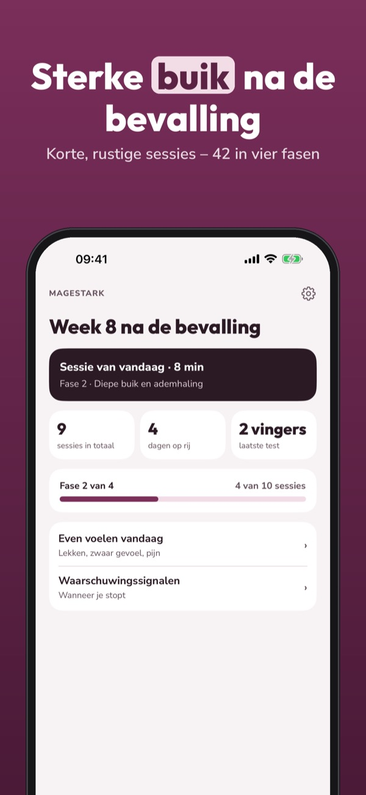
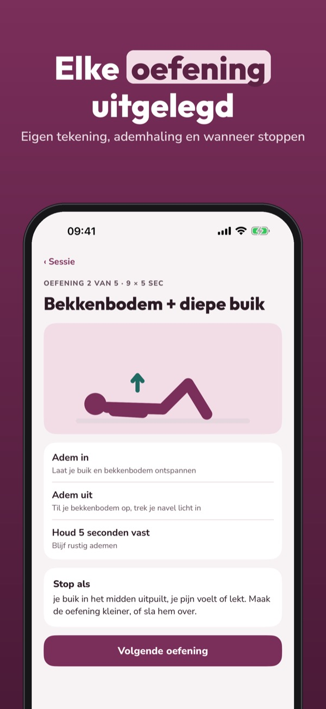
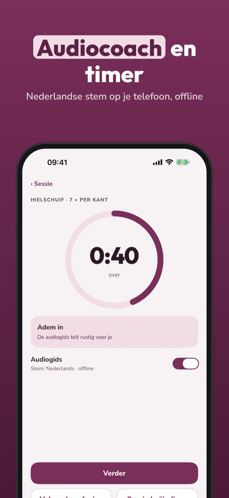
Magestark is een rustig trainingsprogramma voor buik en bekkenbodem na de bevalling, gemaakt voor drukke dagen met een kleine baby.
Fase 1, de vingertest, waarschuwingssignalen en de dagelijkse check kun je zonder aankoop gebruiken. De volledige versie is een eenmalige aankoop voor alle fasen, audiocoach en voortgang. Geen abonnement.
Magestark is een trainingsprogramma en vervangt geen zorgverlener. Begin na groen licht van verloskundige, huisarts of fysiotherapeut.
Terms of Use (EULA): https://www.apple.com/legal/internet-services/itunes/dev/stdeula/
Privacy: https://baytechbv.github.io/privacy/magestark-eu/
Lugn core och bäckenbotten
Korta, lugna pass för magen och bäckenbotten efter förlossningen. Fyra faser, ljudguide och timer, fingertest och varningstecken – utan internet.
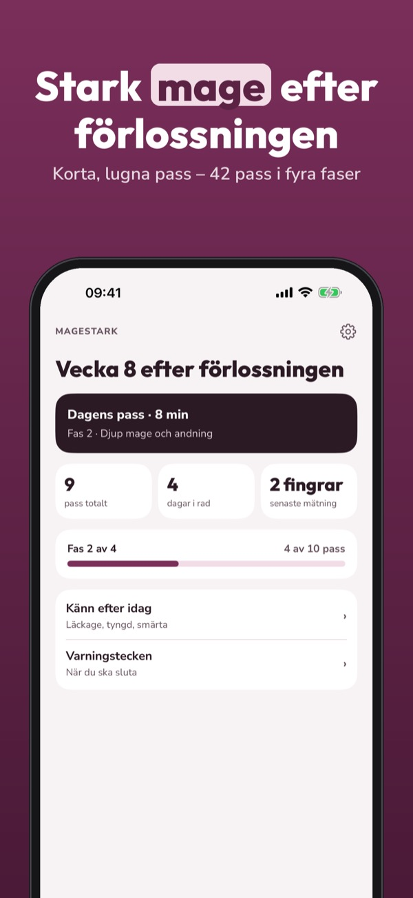
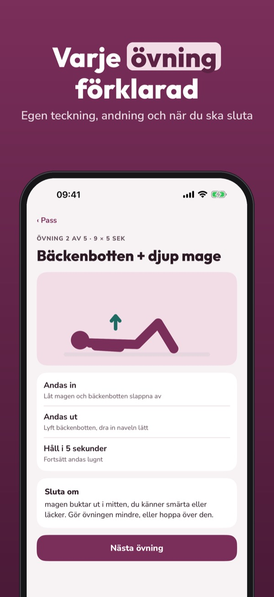
Magestark är ett lugnt träningsprogram för magen och bäckenbotten efter förlossningen, gjort för stressiga dagar med en liten bebis.
Fas 1, fingertest, varningstecken och daglig koll kan användas utan köp. Fullversionen är ett engångsköp som låser upp alla faser, ljudguide och framsteg. Ingen prenumeration.
Magestark är ett träningsprogram och ersätter inte vården. Börja efter klartecken från barnmorska, läkare eller fysioterapeut.
Terms of Use (EULA): https://www.apple.com/legal/internet-services/itunes/dev/stdeula/
Privacy: https://baytechbv.github.io/privacy/magestark-eu/
Bauch und Beckenboden sanft
Kurze, ruhige Einheiten für Bauch und Beckenboden nach der Geburt. Vier Phasen, Audio-Coach und Timer, Fingertest und Warnzeichen – ohne Internet.
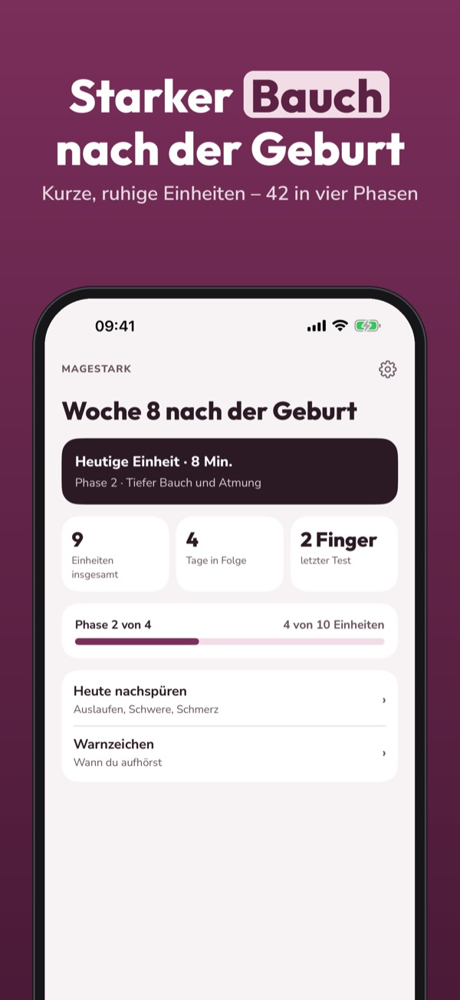
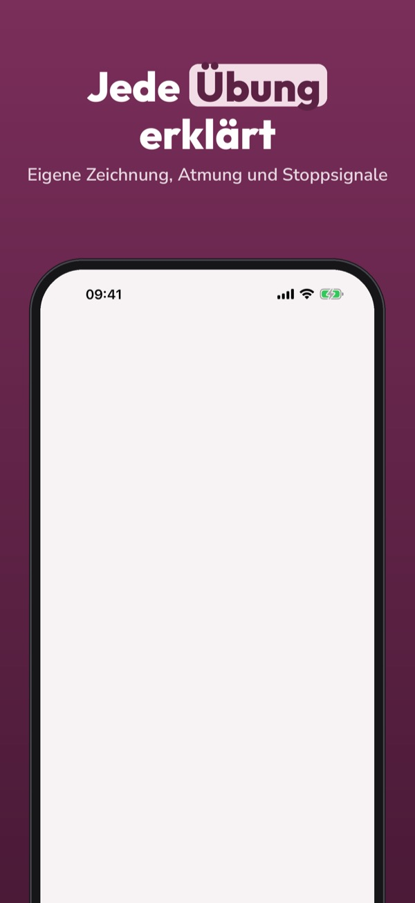
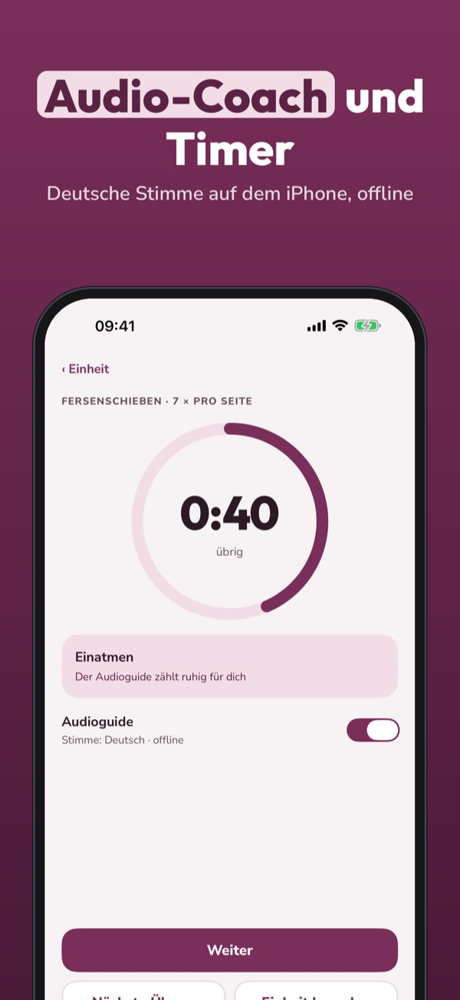
Magestark ist ein ruhiges Trainingsprogramm für Bauch und Beckenboden nach der Geburt, gemacht für volle Tage mit einem kleinen Baby.
Phase 1, Fingertest, Warnzeichen und der tägliche Check sind ohne Kauf nutzbar. Die Vollversion ist ein Einmalkauf für alle Phasen, Audio-Coach und Fortschritt. Kein Abo.
Magestark ist ein Trainingsprogramm und ersetzt keine medizinische Betreuung. Beginne nach dem Okay von Hebamme, Ärztin oder Physiotherapie.
Terms of Use (EULA): https://www.apple.com/legal/internet-services/itunes/dev/stdeula/
Privacy: https://baytechbv.github.io/privacy/magestark-eu/